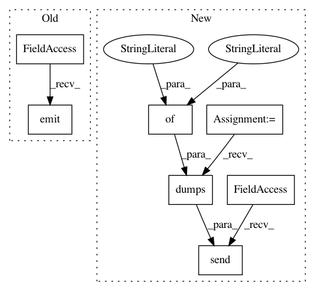

4b57e37c371bd9a4f02360a2731b49abd03bb845,parlai/messenger/core/message_socket.py,MessageSocket,_send_world_alive,#MessageSocket#,149
Before Change
def _send_world_alive(self):
Registers world with the passthrough server
self.socketIO.emit(
"world_alive", {"id": "WORLD_ALIVE", "sender_id": "world"}
)
def send_fb_payload(self, receiver_id, payload):
Sends a payload to messenger, processes it if we can
api_address = "https://graph.facebook.com/v2.6/me/messages"
After Change
def _send_world_alive(self):
Registers world with the passthrough server
self.ws.send(json.dumps({
"type": "world_alive",
"content": {"id": "WORLD_ALIVE", "sender_id": "world"},
}))
def send_fb_payload(self, receiver_id, payload):
Sends a payload to messenger, processes it if we can
api_address = "https://graph.facebook.com/v2.6/me/messages"
In pattern: SUPERPATTERN
Frequency: 3
Non-data size: 7
Instances
Project Name: facebookresearch/ParlAI
Commit Name: 4b57e37c371bd9a4f02360a2731b49abd03bb845
Time: 2018-02-20
Author: jju@fb.com
File Name: parlai/messenger/core/message_socket.py
Class Name: MessageSocket
Method Name: _send_world_alive
Project Name: facebookresearch/ParlAI
Commit Name: 4b57e37c371bd9a4f02360a2731b49abd03bb845
Time: 2018-02-20
Author: jju@fb.com
File Name: parlai/mturk/core/socket_manager.py
Class Name: SocketManager
Method Name: _send_world_alive
Project Name: facebookresearch/ParlAI
Commit Name: 4b57e37c371bd9a4f02360a2731b49abd03bb845
Time: 2018-02-20
Author: jju@fb.com
File Name: parlai/mturk/core/socket_manager.py
Class Name: SocketManager
Method Name: _send_response_heartbeat